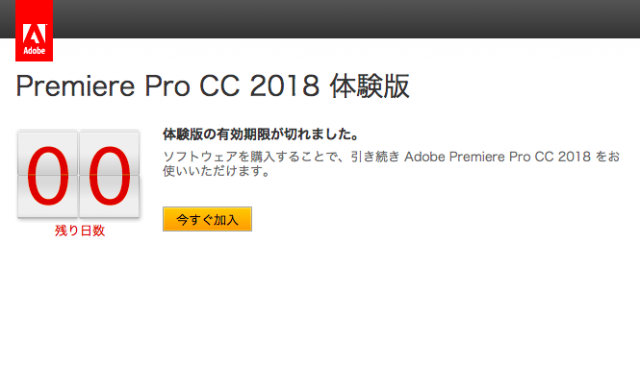
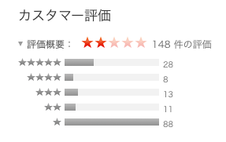

はじめに
海外配信者の音楽はほぼ訴えられないらしい。
うん、日本語難しいからね。訴える訴えない以前にまず見つけられないんだろう。
ともあれ、今回はそーゆー授業じゃないので著作権フリーの音楽、動画を使うこととする。
使用したもの
使用した動画の配信元は
NHKクリエイティブ・ライブラリー様、
音楽は
youtubeaudiolibrary様より『Tiptoe』（フリー）。使用した編集ソフトはiMovie。
・・・。
…ん？？
純正品とは
とりあえず、ざっくり説明すると

こんな感じで別の動画編集ソフトを使うこととなった。
使用したのはこちら。

著作権で制限掛けて検索したらこのアイコンしか出てこなかったが、アレだ。紫のヤツだ。
・・・で、ざっくりのところを少しほぐして説明、なんで私だけpremiereじゃないのか、と。
premiereでの編集が間に合わなかったのだ。結論を言うと。
で、後々重い腰を上げて編集を再開しようとしたらですね。
なんと体験期間が過ぎてたのですよ。一ヶ月経ったら使えなくなるのすっかり忘れてた←
そもそもadobeの諸々をお下がり？？的なもので済ませてたのが悪いんだけど。
とにかく、代わりにApple純正品のiMovieでなんとかしよう、とですね。
まーこれが評価低いのなんの。

下手したらApple純正品最低評価なんじゃないだろうか。以下カスタマーレビュー
- 落ちる
- クラッシュしまくる
- 写真を読み込まない
- 使い物にならない
タダだからあまり文句は言えないが、それにしても酷い評価だ。
これでインストールして起動しなかったら、私が「起動しない」と題したレビューを付けて、評価を完璧なものに出来たのだが。
幸いか、残念ながらか、問題なく起動した。
ちなみに、問題なく編集も仕上げられた。
作業工程
早速だがこちら完成品。
改めて見て見ると、何を考えてこれを作ったのだ、私は？？
まーいーや。
音楽の節に合わせて鳥が動くやつをやりたかった。面倒だった。
作業工程と言えるほど複雑な作業も入っていない。
まず、音楽を読み込み二分十秒に収まるようにカットして、フェードアウトするようにする。ちょうど区切りの良いところで消えるように。
その後は、動画を貼り付けては音楽の節に合うよう前後を裁断して、また貼り付けて。
節に鳥のモーションを合わせて、その前後の節に合わせて裁断したら、一応それっぽくなった。
コツのようなものは全く掴めなかったが、強いて言うなら音楽の波形を見ることだろうか。
曲調の変化は波形に現れるので、そこに合わせて動画を切り貼りすると結構うまく行った。
ただ、残念なことにiMovieはpremiereと違い貼り付けた動画同士の間にマージンが取られる。
後ろを裁断する分には面倒無かったが、前部分の裁断に苦労した。
そう言う時は、後ろを裁断した後で、一節に掛かる時間で前を裁断すれば良いと気付いたのは終わりに差し掛かる頃だったか。
あぁそうそう、出演者を紹介せねばなるまい。ハシビロコウさんだ。
終わりに
今回は著作権に最大限気を配った純白の動画を仕上げた。もうちょっと黒みがかかってもいいくらいだ。
とにかく著作権は神経を使う。正直、一々気にしてられない。さもなくばハゲる。
灰色が一番いいな、やっぱり。グレーゾーン最高。